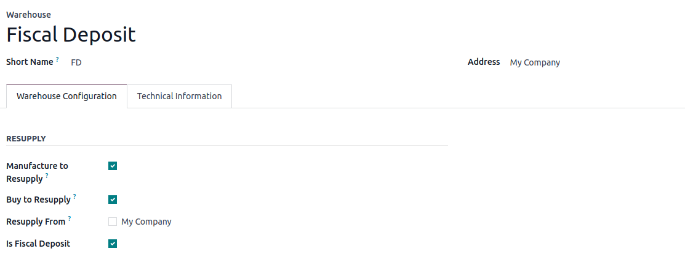
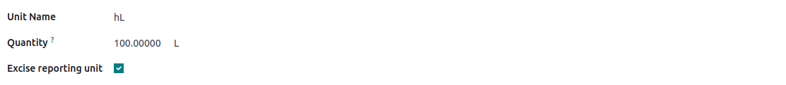

⚠️The Excises Module is not part of Odoo standard but uses Odoo Studio and leverages lines of python code; therefore installing this module may increase your subscription.
Excises Module aims at enabling the management and reporting of excise related products, more specifically alcohol goods.
It enables:
Excise categories are defined as a custom model with Studio and can be found in the inventory menu.
Excise category consists of:
Once defined, excise categories can be assigned to products with the Excise amount.
⚠️It is paramount that the Product unit of measure (beside Sales Price and Cost) shall be of volume quantity for the computation of the Excise reporting.
The excises reporting concern organisation managing their stock with fiscal deposits.
The reporting of excises consist in monitoring entering, exiting and currently located excises concerned products in a fiscal deposit.
To monitor such fiscal deposit with this module, set the field Is Fiscal Deposit from the warehouse form.
💡With this setting, all stock moves related to excises concerned products and this warehouse will be reported.
Note that you can have multiple fiscal deposit warehouses and transfers between them are accounting in the reporting.

⚠️You shall select the excise reporting unit of your choice before any stock move related to excises.
To do so, follow those steps:

In the excises declaration, origin and destination might have an impact and you shall therefore know ahead if you purchase from a supplier or sell to a customer having a fiscal deposit.
To capture this information on the contact and never have to worry about this in the future, this information is captured in the contact fiscal position.
This way, both transactions and reporting will account for the fiscal deposit of your contact and therefore exclude the excises from the price and categorize appropriately the fiscal deposit move.
If not existing yet, to capture a contact has a fiscal deposit, duplicate its fiscal position and set the Is Fiscal Deposit setting. Excise taxes are assigned to all non fiscal deposit fiscal position thanks to an automation.
⚠️When installing this module, all Fiscal Positions are set as Fiscal Deposit.
Adjust the Fiscal Positions which are not to consider the Excise Taxes in your orders.
💡As a reminder, the excise reporting has nothing to deal with sales and purchase but focus on entering, exiting and available products in fiscal deposit warehouses.
The excise report is available from the Inventory Reporting menu and consists of a pivot table summarizing the volumes monitored through the fiscal deposit warehouses in the excise reporting unit (hL by default).
The columns correspond to excise categories and rows are split by periods and then by fiscal deposit moves.
The entries are summed positively and exits negatively which enables to compute balances when aggregated:
The fiscal deposit moves are:
Finally, excises impact as well the sales in two manners:
To ensure that products submitted to excises account for it in module, an automation is setup so that as soon as an excise category is applied, the Excise tax is added to the product.
Similarly to VAT and other taxes, not all sales are submitted to them. This applies as well to excises given this can be considered as a local tax, where the product will be consumed by end customers.
Odoo easily handle this through fiscal position of contacts, in their Sales tab.
As always, including a tax in the product price or not will depend on your primary business.
If B2B, you might want to exclude the excises, similarly to VAT, while if B2C, on the other hand you might want to include it in the price.
To apply discount beside the excises, you shall setup your excise tax as excluded from price.
On the other hand, if including the excise tax in the price, discounts will apply on the product price while the excises tax is not shrinking, lowering your margin ultimately.
To change this setting, open the excise tax, and adjust the Included in Price setting from the Advanced Options.
As stated in the Purpose section, this module aims at enabling at first the management of alcohol products.
However, numerous products are submitted to excises such as tobacco, e-liquid and more.
Don't hesitate to contact us in case this does not yet meet your needs!